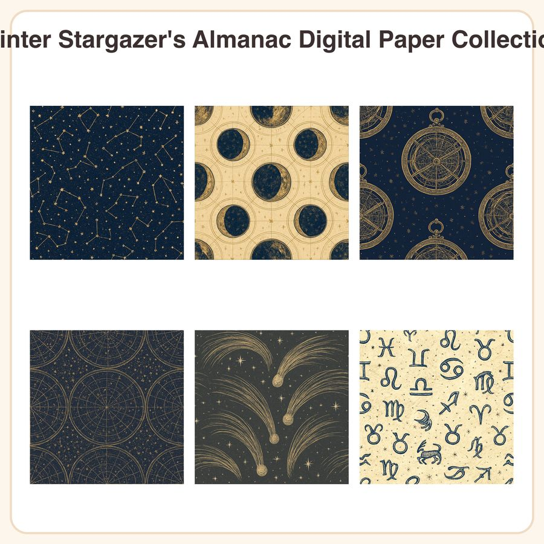

$5.50
View on Etsy✨ Bring old-world atlas charm to your projects with the Winter Stargazer's Almanac Digital Paper Collection — six vintage celestial engraving patterns in deep indigo, aged gold, and parchment cream, perfect for astronomy-loving crafters and planner decorators. What's Included: • 6 seamless digital paper designs, each in two formats: - 3072px square JPEG (12x12in @ 256dpi, print-ready) - Repeatable PNG tile for seamless digital pattern use • 12 files total The Patterns: 1. Hand-etched constellation map scattered across a deep midnight indigo field 2. Moon phase diagram grid in gold ink on aged parchment 3. Brass astrolabe line-art repeated over deep navy 4. Engraved star chart grid with tiny gold dotted stars on charcoal 5. Sweeping comet trail illustrations on soft charcoal-grey 6. Scattered zodiac glyphs on warm cream parchment How to Use: Perfect for scrapbook backgrounds, junk journals, planner covers and inserts, card making, gift wrap, digital planner backgrounds, printable stationery, and more. Files are high-resolution for crisp printing and the PNG tiles allow seamless repeats for larger digital layouts. License: For personal and small-business commercial use (physical or digital products, up to 500 sold units). Please do not resell, share, or redistribute the files themselves in original or altered form. A Little Honesty: This collection was designed in-house by our shop, using AI-assisted tools as part of our design process to help refine the etched linework and color palette. We reviewed and finalized every pattern by hand to match the vintage-atlas style described here. Instant download — no physical item will be shipped. Due to the nature of digital files, all sales are final.